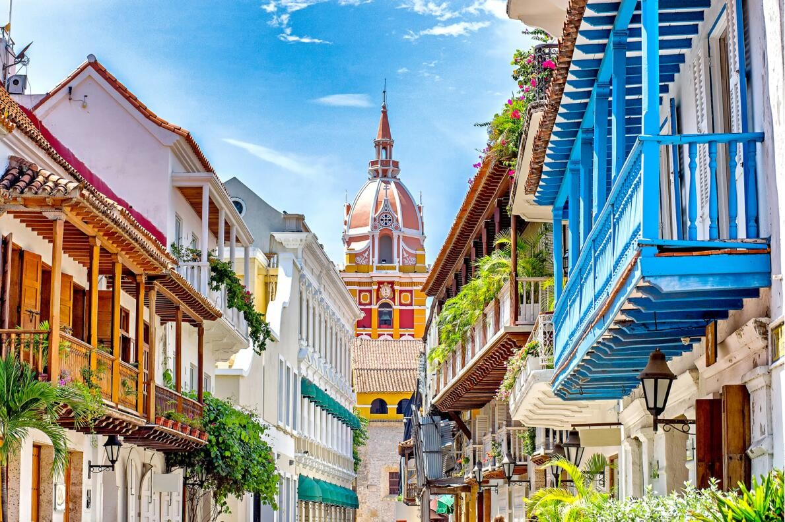

- Inicio
- Contacto
- Gabriel García Márquez(escritor,guionista,editor y periodista colombiano)
- Rodolfo Martínez Tono(funcionario de la Organización Internacional del Trabajo OIT y fundador del SENA)
- Adolfo Mejía Navarro(guitarrista, pianista y compositor)
- Bandeja de pescado frito
- Cazuela de mariscos
- Camarones al ajillo
- Posta Negra
- Mote de queso
- Champeta
- Vallenato
- Salsa
- Castillo de San Felipe Barajas
- Palacio de la Inquisición
- La torre de reloj
- Murallas de Cartagena
- Cerro de la Popa
- Las calles coloniales
- Monumento a la India Catalina
- Isla Grande
- Isla del Pirata
- Isla Fuerte
- Isla Múcura
- Isla Barú
- Islas Del Rosario
- Playa Blanca
- Kala Island
- Isis Gigi's Boutique Resort
- Kalua-Private Ocean Villa
- Festival Iberoamericano de Teatro
- Festival Rock al Parque
- Colombia al Parque
- Festival de Verano
- Ágora Bogotá
- Descubrimiento de la bahía de Cartagena (1503)
- Fundación de Cartagena de Indias (1533, 1 junio)
- La inquisición de Cartagena de Indias (1610)
- Declaración de la independencia de Cartagena (1811, 11 noviembre)
- El asedio de Bolívar en Cartagena (1815)
- Rechazó de la inquisición (1821)
- Liberación de Cartagena de Indias (1821, 10 octubre)

CONOCE CARTAGENA
Población
914.552 (2020)
Clima
Tropical(Promedio al año de 27 ºC)